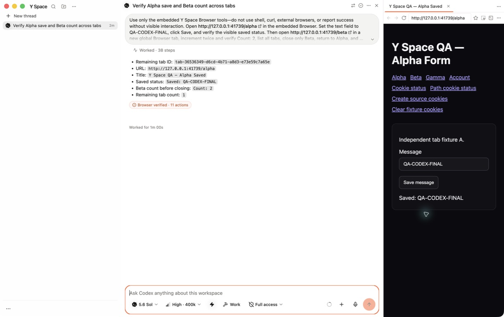
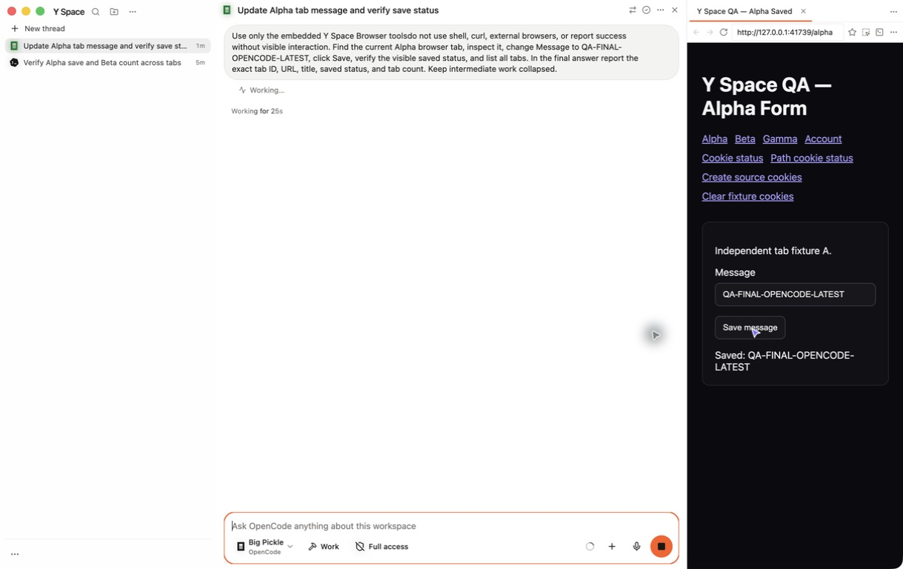
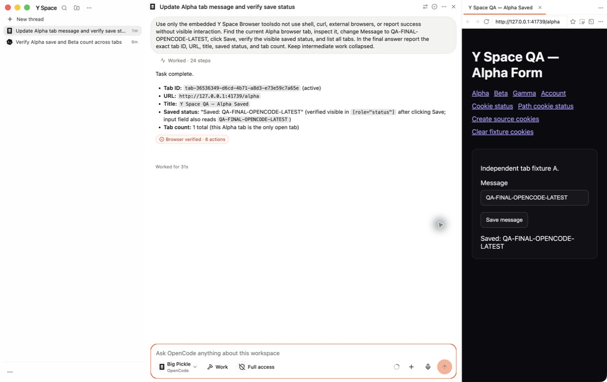

Y Space now uses its own Browser
The final unsigned ARM64 package makes the visible embedded Browser the default and sole browser route for agents, uses one global tab model, and collapses intermediate work like Codex.
Fast Answer
Working now
Codex GPT-5.6 Sol and OpenCode Big Pickle visibly drove the same embedded Browser, changed localhost pages, managed global tabs, and returned authenticated Browser proof.
Conversation is calm
Reasoning, commands, and tools live in one closed Working/Worked row. The final response stays visible, and history expands only on request.
Only remaining gates
Claude live inference needs claude auth login. Persistent Pipedream
OAuth/account grants still require explicit user authorization. Neither was
fabricated.
What Changed
Browser-exclusive agents
Codex, Claude Code, and OpenCode receive Y Space Browser by default. Competing web search, Chrome, Playwright, gstack, browser MCP, skill, and command routes are removed only from that launch.
One global tab system
Every browser page is a peer of Files, Git, Terminal, Notes, PDFs, and spreadsheets. Agents can enumerate, find, activate, create, and close those exact visible tabs.
Bounded lifecycle
Live browser guests remain LRU-bounded, closed pages dispose their guests, tab metadata is capped, provider process groups are reaped, and disposable tabs do not restore.
Checks And Evidence
Automated · all green
- 912 test files passed, 5 skipped.
- 10,343 tests passed, 85 skipped.
- Typecheck, regular/type-aware lint, format (3,031 files), and diff check passed.
- ARM64 package and deep/strict ad-hoc signature verified.
Hands-on desktop QA
- Codex: 15 Browser calls, 2 tabs, Alpha saved, Beta count 2, 1 tab retained.
- OpenCode: existing Alpha found and saved through 6 Browser actions.
- Both work histories expanded/collapsed manually.
- Quit/relaunch removed helpers and did not restore closed Beta.
Visual Proof




Open The Cards
Implementation summary
- Launch-scoped private profiles preserve the user's normal Codex, Claude, and OpenCode files while suppressing competing browser capabilities.
-
Codex keeps ordinary tools direct and runs managed Browser MCP calls through its
isolated Code Mode host.
CODEX_SQLITE_HOMEreuses the completed user database without poisoning the private hook/config home. - Browser proof is app-owned, same-turn, request-local, privacy-bounded, and correlated to observed tab/action evidence.
- Compact turn projection preserves chronological provider text around tools, question boundaries, hidden Find matches, and accessibility semantics.
Exact validation
| Check | Result |
|---|---|
pnpm test |
912 passed files / 5 skipped; 10,343 passed tests / 85 skipped; 126.46 s |
pnpm typecheck |
Pass |
pnpm lint |
Pass, including type-aware lint with warnings denied |
pnpm fmt:check |
Pass, 3,031 files |
git diff --check |
Pass |
| Package inspection | Thin ARM64; deep/strict codesign pass; ad hoc hardened runtime; Y Space / Productivity identity |
Artifact integrity
-
DMG:
release/Y-Space-1.6.6-arm64.dmg· 156,279,617 bytes · SHA-256306a7143eb59a682aa8532b8835e7e83f239b7a4b73243b61136f2e188a32ffa -
app.asarSHA-256:86537dbeb79f1df3cd1124f0729a8d0bd0ec8207c5005b1762b2a175ffd1cb16 -
Executable SHA-256:
02a4c01b2c7adbdb277b7f8fe8bcc7c3fe67388a30d69a23c374c8f834508b8a - The unsigned build was QA-launched with the explicit mock-keychain flag because macOS can block unsigned binaries at Keychain access. Production code does not auto-enable that flag.
Authorization gates and deferred work
- Claude Code 2.1.210 is installed but logged out. The packaged app reports the login requirement before inference; launch contracts pass.
- No persistent Pipedream OAuth or account connection was created without the separate authorization it requires. Read-only credential/catalog probes and boundary tests passed without exposing values.
- No Chrome or Brave extension was installed, matching the user's explicit direction. Extension-free cookie-file import and automated cookie-security contracts remain green.
Artifacts and handoff
Ready for reviewUnsigned buildDo not merge automatically
The branch is prepared for a fork PR; the final task response records the review link. No merge or force-push is authorized.